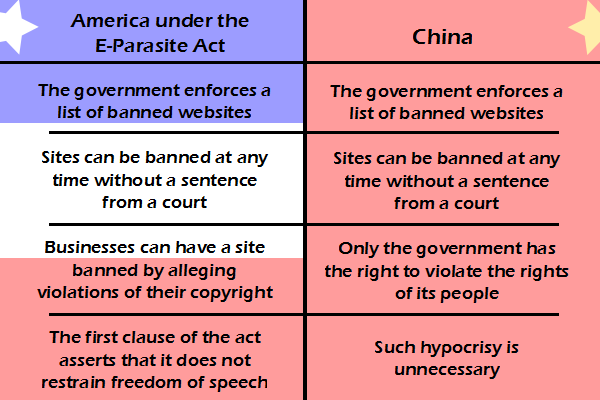

Comic JK 800
When I Feel Like It
⇤
<
?
>
⇥

⇤
<
?
>
⇥
Forum
.
RSS
.
Digg
.
Facebook
.
Reddit
.
Twitter
.
Stumbleupon
Enter your thoughts on number 800 here. Please, no spamming, trolling, phreaking, or expressing free speech. The worst thing about censorship is [CENSORED]. One other difference: The US hosts the majority of the core internet servers. This means that if a site is blacklisted in the US, it (probably) can't get through to other countries, either. Or at least that's the take of the Demonoid staff. Too true. I guess the Constitution isn't really a part of our laws anymore. > I suppose you didn't notice that many, both "progressive" and "conservative", speak as if anyone who thinks it should is an idiot. Wonderful alt-text. Bwahahahaha - You sir ... well done. >>yes, well done Y'know, I'd just let them write the law. ADSFFirst time it gets used, the appeals process takes it up to supreme court and gets the entire law ripped to bloody shreds for its violation of multiple clauses in the constitution. Also, I don't think "this doesn't violate free speech" is a legally binding way of preventing a law from violating free speech. >Do you trust the Roberts court to act against the vocal interests of large corporations? It hasn't done so reliably in the past, see: Citizens United. >It's cute how you think courts follow the law >>Heh, I don't have any experience with the American Supreme Court. In Canada, the Supreme Court actually does its job. Well, usually. >> Jim's law: Kill all people with dark skin color. PS: This law is not racist! >>> It's not racist, if it's the law! >> This legislation will never pass committee. >>>It already got out of committee in the Senate. There is money behind the bill; it will take activism to stop it. >>>>#OccupySunsetBoulevard >>>>>#OccupyTheWhitehouse! >>>>>>#OccupyYourTime! >>>>>>>#OccupyApplePie! >>>>>>>>#OccupyYourMom I guess democracy and capitalism are just scapegoats to another restrained regime. >People tend to ruin everything. Including girly shows and webcomics. >>They also tend to make a big deal about everything. Including girly shows and webcomics. Speaking of which, how many bronies read this webcomic? Let's make a tally: >>> We only have the right to do whatever the government allows. The terrorists have won, our biggest fear now is our government. >>>> -1 >>>>> -2 >>>>>> -1 >>>>>>> -1 To be fair, all copyright law restricts freedom of speech some, and I wouldn't say all are bad. That said, you can't arbitrarily declare that a law doesn't violate the first amendment (at least not accurately). We are all going to die. I'm trapped in a mine run by evil robots, please come quick before...#!$!%message redacted... Everything is fine. Please disregard the last message. Robots are our friends. Trust the robots. We are here to protect you from the terrible secret of space. >Kay, thanks guys. We owe you one.